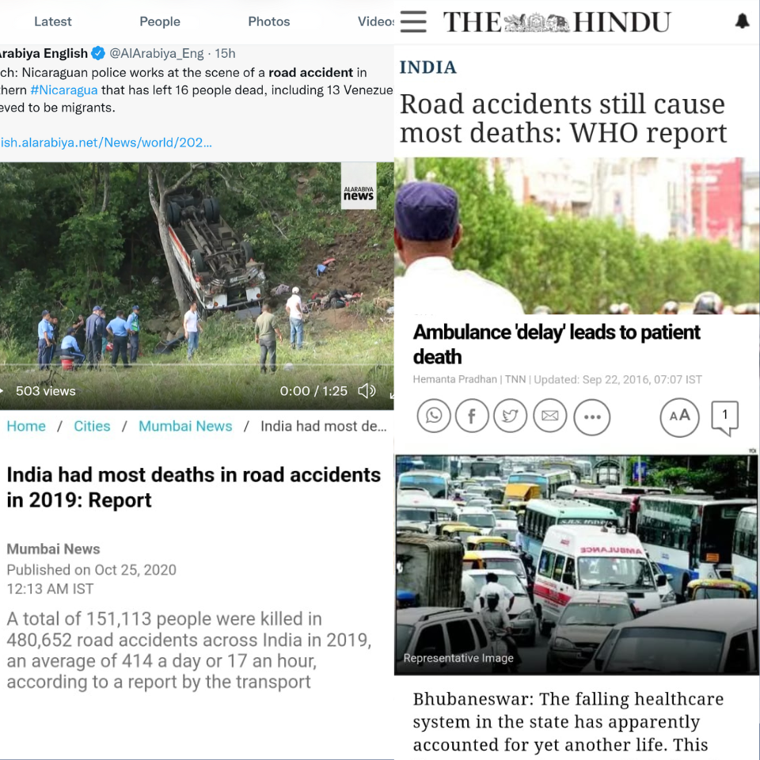
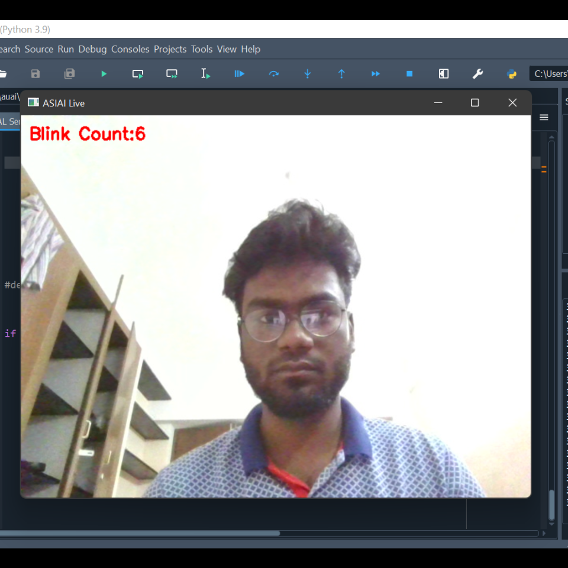
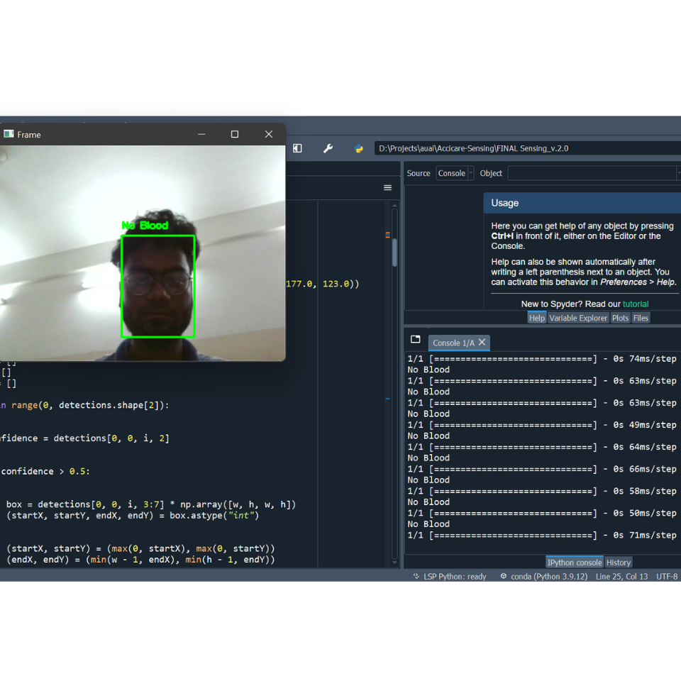
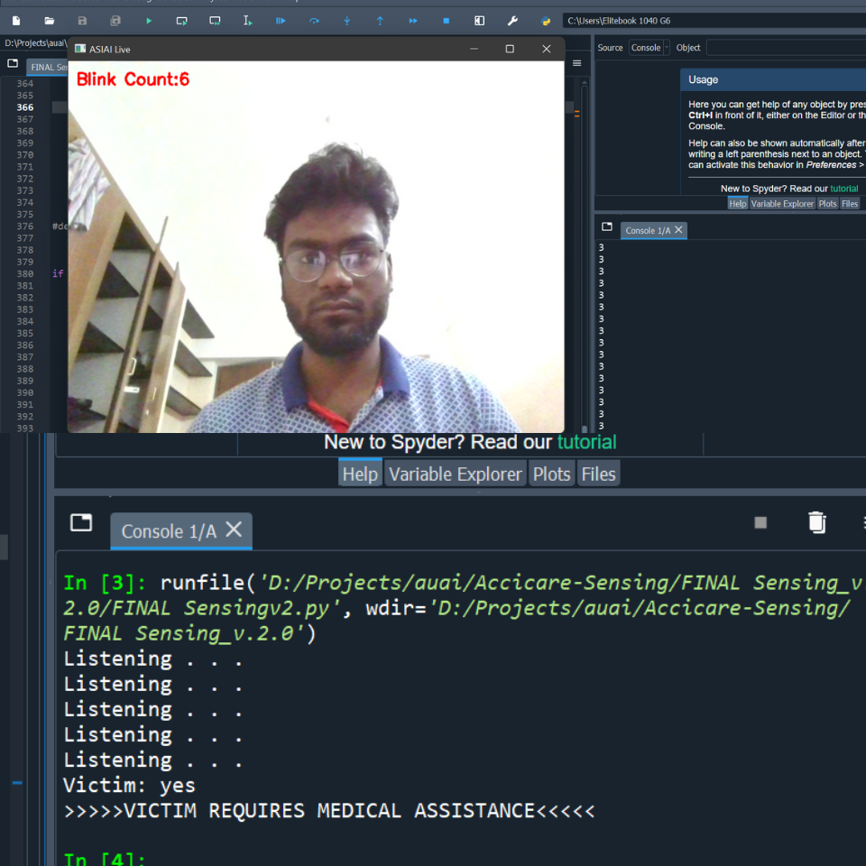
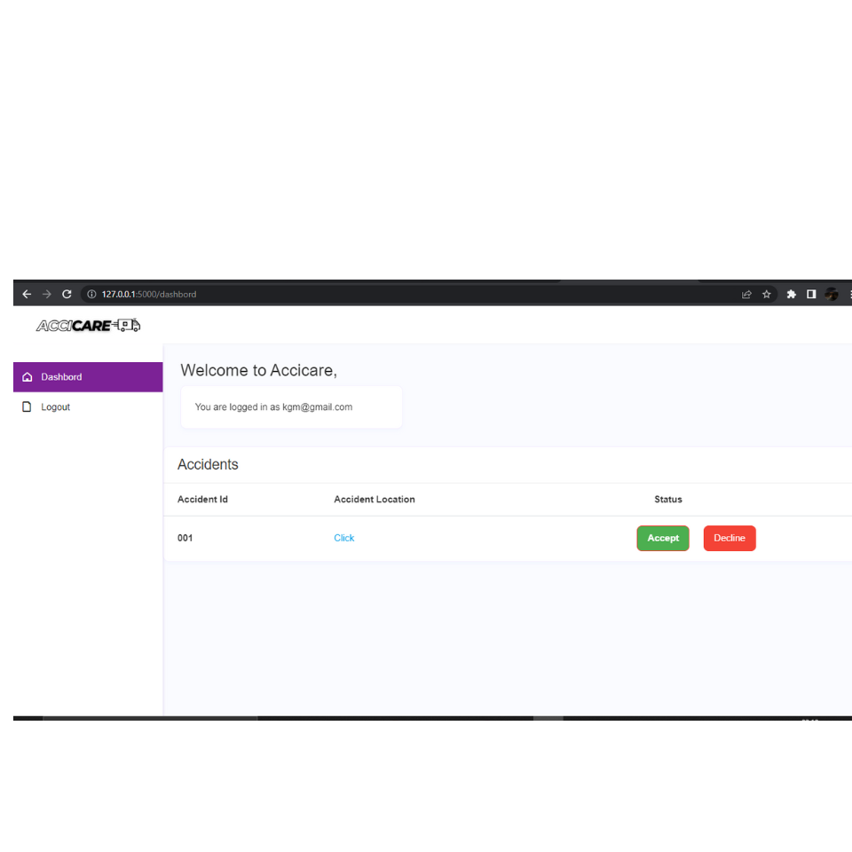

Accicare
A step to reduce deaths on roads
Accicare is the ideal solution for reducing accident related deaths from happening on Indian roads. Accicare is for you so you don't drive with the fear of death anymore!
Our process of saving lives
Accicare is the ideal solution to save atleast 30% of deaths on roads
Why Accicare?
Every year around 150k people get killed for every 460k road accidents in India, the major reason being delayed medical response. This has to change!

Accicare knows
Here on, when an accident occurs, AcciCare will be there to SAVE THE DAY 😎. Accicare KNOWS
an accident happened from the OBD(On-Board Diagnostics) trigger.

Accicare sees
Once an accident is sensed, Accicare SEES the status of the driver and passengers using computer vision. Accicare calls for help if there is
BLOOD🩸

Accicare listens
Accicare asks the passengers if they need medical help for further clarification and LISTENS. Accicare uses the passenger’s response along with visual input to check if the passenger is CONSCIOUS.

Accicare shares
Accicare takes all these vital information from the accident zone along with the location and SHARES it with all the hospitals in a 5km radius so they can send immediate medical 🏥 help
